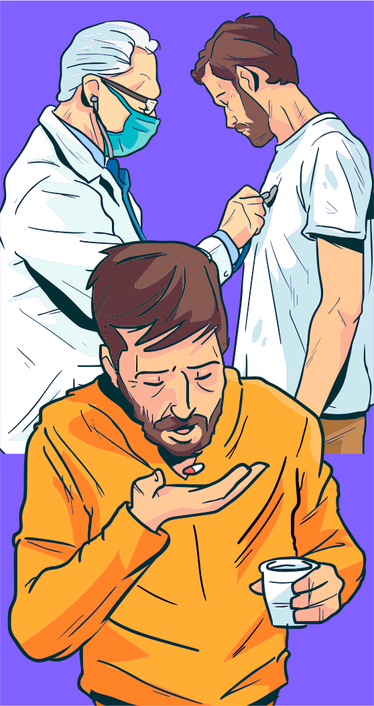
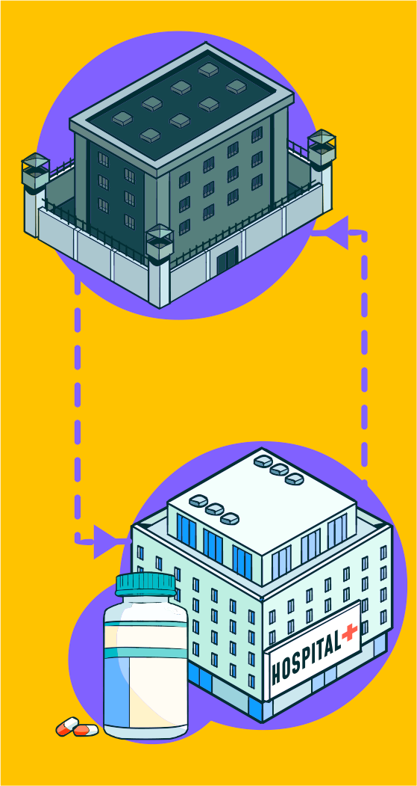

Você deve agora estar se perguntando se é possível
estabelecer
outras
ações que possibilitem o enfrentamento da
TB no
sistema prisional, dadas as dificuldades vivenciadas, incluindo a escassez de recursos.


1. Melhoria da comunicação entre os
serviços de saúde das unidades prisionais:
as transferências frequentes
de presos é
uma realidade e elas aumentam a chance de interrupção do tratamento. Ao se implementar
um sistema de
informação e comunicação ágil entre os serviços de saúde das diversas unidades
prisionais se evitaria a
interrupção
do tratamento.
2. Transferência de indivíduos em TDO para unidades
prisionais com ações
de controle da TB
implantadas:
todo paciente em
tratamento supervisionado precisa ser transferido para unidades prisionais com as ações
de
controle da
TB implantadas.
Dessa forma, garantem-se a continuidade do tratamento, a possibilidade de cura e o
controle da
doença.
Conforme
preconizado pela legislação, o prontuário de saúde deve sempre acompanhar o paciente por
ocasião
das
transferências
entre as unidades prisionais.
3. Garantia da continuidade de tratamento
extramuro:
a
pessoa
que vai dar continuidade ao tratamento fora da unidade prisional precisa saber que é
possível o
acesso ao
tratamento em qualquer unidade de saúde e que, se necessário, os familiares podem
ajudá-lo nesse
acesso
à unidade.
Idealmente, o paciente deve ter em seu poder um documento de encaminhamento para dar
continuidade em
unidade de saúde em
caso de livramento, informando a data de início e o esquema de tratamento. A unidade
prisional
deverá
comunicar a
transferência do paciente à vigilância epidemiológica do município.
4. Atividades de educação em saúde:
realizar atividades de
educação e sensibilização possui papel essencial no cenário prisional, e
elas
devem estar
integradas ao dia a dia do serviço de saúde: nas consultas, no acompanhamento do
tratamento,
exame de
ingressos e
durante as campanhas de busca ativa. Nesses momentos, os profissionais da saúde devem
fornecer
informações, ouvir as
dúvidas das pessoas privadas de liberdade, servidores e toda a comunidade prisional para
buscar
com elas
caminhos para
solucionar suas dificuldades. Dada a importância da coinfecção TB/HIV, esse tema deve
ser
contemplado
nas ações
educativas.